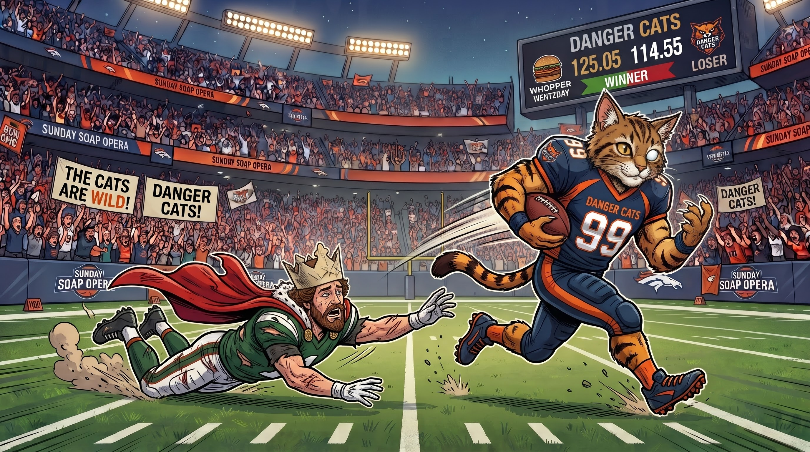

Week 9 didn't just shake up The Sunday Soap Opera—it practically tore the stadium down and salted the earth beneath it. In a week of pure apocalyptic mayhem, the high-flying West division monarch suffered his second loss of the year after being contaminated by bad tartar sauce, a perfectly synchronized front office dropped a historical 222-point orbital strike, and a front office in Steeltown traded away the #3 overall Superflex quarterback for a pocketful of loose buttons and a rusty bicycle.
In our official marquee heavyweight clash presented by Kalshi, the Danger Cats pulled off the ambush of the decade, felling Whopper Wentzday 125.05 to 114.55 to hand the West leader his second loss of the season.

Whopper Wentzday marched into Sunday strutting around like fantasy royalty, only to suffer the most embarrassing fast-food blowout in league history. Superflex starter Jared Goff forgot how to throw a football, putting up a putrid, unmoored 3.00-point line that smelled like expired tartar sauce. The Danger Cats pounced on the greased-up carcass, getting 23.10 points from Christian Watson and a gutsy team effort to send the King crying into his paper crown. The felines move to 5-4-0, proving even 7-1 front offices can crumble under catastrophic decision-making.
In the single most terrifying offensive massacre ever recorded by this publication, Clench Tuxedos turned RUN CMC into fine dust in a historic 222.90 to 113.15 slaughter.
Operating as a computer-calibrated, hyper-efficient unit, the Bi-Managers constructed a lineup so lethal it should be banned under international treaty. C.J. Stroud (49.20) and Jordan Love (40.90) combined for nearly 90 points at quarterback alone, while Kenneth Walker III ran for 32.30 and Puka Nacua added 21.00. Poor RUN CMC actually had Christian McCaffrey put up 20.70 points, but Geno Smith’s pathetic 5.05-point line made them look like a squashed squirrel on the highway. The Tuxedos advance to 5-4-0 with the highest scoring total in the entire league, leaving the rest of the East shivering in fear.
White Bronco wiped off last week’s mud and launched an absolute cruise-missile attack on The Pain Train, rolling to a 171.35 to 115.00 beatdown.
Any rumors that White Bronco was losing their edge were erased in violent fashion. Brock Purdy (29.60), Dak Prescott (23.85), and CeeDee Lamb (23.50) incinerated the secondary, leaving The Pain Train derailed in a ditch. Train manager could only watch in total despair as Ashton Jeanty delivered a microscopic 2.00 points, dropping the Train to 3-6-0 while Bronco moves into a tie for first place at 7-2-0.
Marr Burrow Smokes treated Steeltown Junkies like an unranked high school team, cruising to a ruthless 148.60 to 88.25 execution.
Joe Burrow shredded the defense for 37.25 points to keep the Smokes flying high. Meanwhile, Steeltown Junkies’ management reached new heights of negligence by starting T.J. Watt while he was on an obvious Bye week (0.00) and getting a comedy-gold negative -0.30 from M. Washington Jr. Marr Burrow sails to 6-3-0 in the West, while Steeltown plummets to 4-5-0.
In a grinding, mud-soaked defensive slugfest, Josh Almighty out-ugly'd Kyler Duty 109.15 to 89.25.
Josh Almighty didn't even need Josh Allen (12.20) to show up, thanks to kicker Ka'imi Fairbairn booting an absurd 20.00 points. Kyler Duty committed pure front-office sabotage by benching Travis Kelce (13.30) for Tucker Kraft (0.90). Almighty glides to 6-3-0, while Kyler Duty rots at 2-7-0.
Pop the champagne and throw confetti in the streets! Three Dots an a Dash delivered a glorious, heroic triumph, knocking off the Autobots in a 115.30 to 103.75 stunner.
The Autobots mob—a moniker this very publication bestowed upon them after their second ruthless trade heist of the season—thought they could breeze into Sunday shaking down the division cellar. Instead, TDnD rose up like absolute legends to capture their SECOND win of the year! The syndicate managed the impossible: wasting a majestic 25.65 points from Shedeur Sanders and 22.50 from Ja'Marr Chase because their supporting enforcers operated like they were wearing concrete boots. TDnD didn't care—they let kicker Cam Little blast 21.00 points through the uprights and watched the mob scramble back to their hideouts in total shame. Both squads now stand at 2-7-0, but TDnD owns every single piece of bragging rights!
Danger Cats Receive: Kirk Cousins (QB), Round 14 pick
Steeltown Junkies Receive: Jordan Mason (RB), Round 5 pick
Danger Cats: Grade A+ (Grand Theft QB) Steeltown Junkies: Grade F (Front Office Felony)
Are we sure the Steeltown Junkies front office wasn't under duress when they signed this paperwork? In a premier SUPERFLEX LEAGUE where starting quarterbacks are worth their weight in gold bars, Kirk Cousins was literally the #3 overall ranked QB in fantasy football entering the week. Trading away the QB3 on the planet for a backup running back in Jordan Mason and a mid-round pick is an absolute felony. Steeltown basically traded a brand-new Ferrari for a half-eaten sandwich and a bus pass. The Danger Cats executed absolute grand larceny and instantly positioned themselves for a deep playoff run.
Projection: The Pain Train 95.10, Autobots 58.26
Gazette Pick: The Pain Train 🔮
The Autobots syndicate is projecting a laughable 58.26 points as their operation disintegrates under bye weeks and abandoned lineups. If The Pain Train loses to a team projecting under 60 points, we will personally disband their franchise.
Projection: Three Dots an a Dash 101.99, Steeltown Junkies 93.59
Gazette Pick: Three Dots an a Dash 🔮
Steeltown is reeling after trading away their superstar QB, while TDnD is drunk on the high of winning two whole games. TDnD actually enters as the projected favorite to win two in a row. What a time to be alive.
Projection: Marr Burrow Smokes 126.79, RUN CMC 95.03
Gazette Pick: Marr Burrow Smokes 🔮
RUN CMC is still picking up the pieces of their broken ego after absorbing 222 points last week. Marr Burrow is smooth, calculated, and projected to cruise to an easy victory behind Joe Burrow.
Projection: Whopper Wentzday 138.87, Kyler Duty 81.06
Gazette Pick: Whopper Wentzday 🔮
The Burger King is utterly humiliated after getting poisoned by the Cats. They are coming into Week 10 with extreme violence, and Kyler Duty (with Bo Nix on bye) is the helpless sacrificial lamb.
Projection: Josh Almighty 134.47, Clench Tuxedos 125.61
Gazette Pick: Josh Almighty 🔮
The marquee game of Week 10! The Bi-Managers are coming off a historical high score, but Josh Almighty’s roster is balanced, focused, and free of aquatic pet curses. Expect a high-scoring shootout with Almighty taking the crown.
Projection: White Bronco 145.25, Danger Cats 113.49
Gazette Pick: White Bronco 🔮
The Danger Cats slayed the King last week, but White Bronco just dropped 171 points. Bronco’s quarterback duo is red-hot, and the feline fairy tale comes to a screeching halt this Sunday.